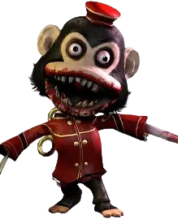

MURDER MONKEY

Informação Geral
Nome: Murder Monkey
Gênero: Desconhecido
Idade: Desconhecido
Papel exercido: Perseguidor
Poder: Não Possui
Fase: Monkey Business
Gênero: Desconhecido
Idade: Desconhecido
Papel exercido: Perseguidor
Poder: Não Possui
Fase: Monkey Business